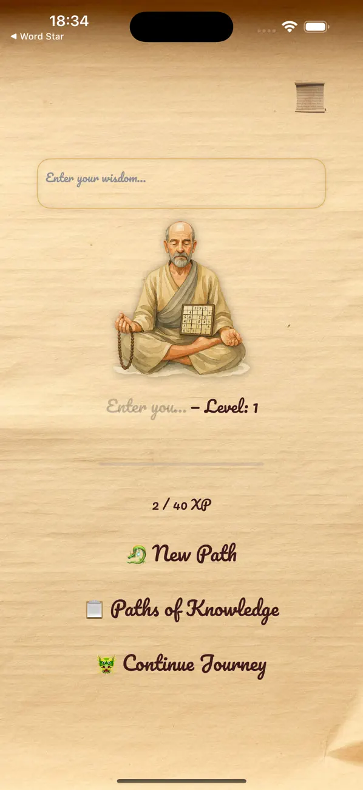
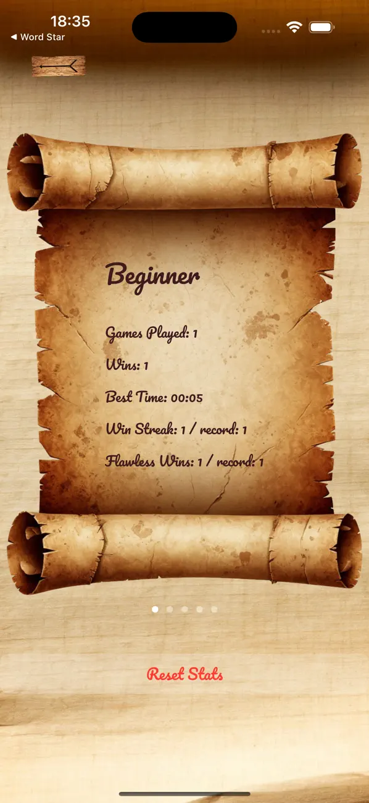

Clarity. Patience. Peace.
A quieter way to play.


Made with care for people who love sudoku. Free, private, and distraction-free.
Clarity. Patience. Peace.


Made with care for people who love sudoku. Free, private, and distraction-free.